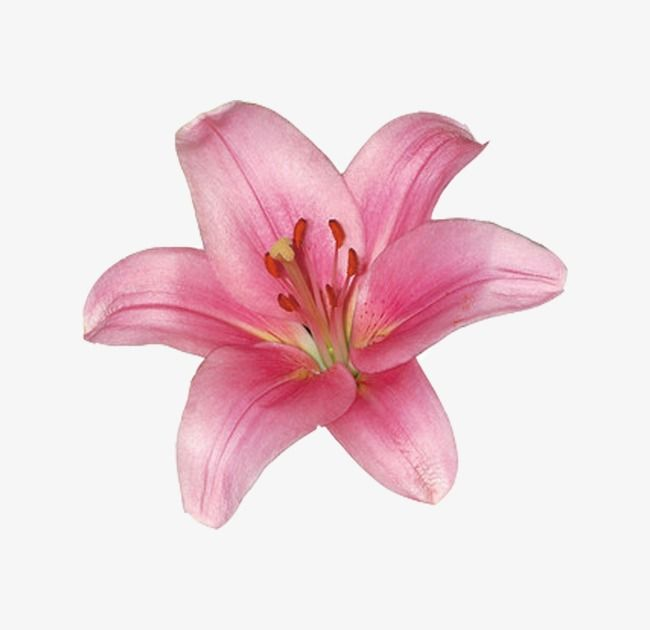
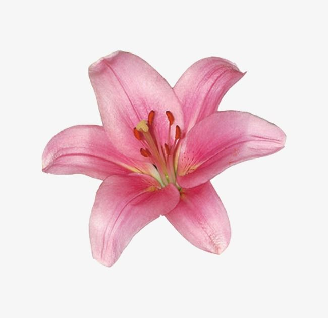

Flowers for You
All these flowers presents our love and the beauty you bring into my life. (Sorry I don't have a flower gift for you, but i promise babawi ako :>) I LOVEEEE YOUUUU SOOOO SOOOO MUCHHH, YOU DESERVE ALL OF THESE FLOWERS.


Celebrating our another malayong month together, Happy 8th for usss!!
All these flowers presents our love and the beauty you bring into my life. (Sorry I don't have a flower gift for you, but i promise babawi ako :>) I LOVEEEE YOUUUU SOOOO SOOOO MUCHHH, YOU DESERVE ALL OF THESE FLOWERS.

My Everything,
Heyyy heyy my baby, soo tbh hindi ko alam where to start HAHAHA but I'm writing this aug 24th, 2024 time check: 11:32pm. So since hindi ka makaka punta here for our monthsary, i figure to make you a website nalang :)). I hope you will like this!!
First thing, I want to appreciate and say thank you to all the efforts, love, understanding na you always manage to give me (MORE PA PO PLEASE). Sometimes naiisip ko if i even deserve you, and syempre naman noh. Ang lungkot, lugmok, boring, dismaya siguro ng buhay mo if wala ako HAHAHAHAH. Kidding aside, i will keep this short and straightforward since im keeping my long messages soon (wedding?!?!), BABYY I WILL KEEP YOU MINE FOREVER. NO WAY I WILL LET YOU GO (PITIKIN KITA LODS KAPAG INIWAN/NILOKO MOKO), PLUS IM ALL YOURS!! IM STAYING SAYO AND UR STAYING WITH ME. Lets be patient sa isat isa. We have plenty of rooms for improvements here sa relationship natin :). Happy 8th Monthsary Babyy!! I LOVE YOU SO MUCH
Yours forever,
Weng <3